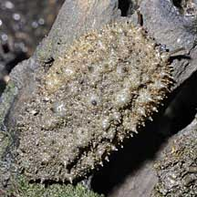
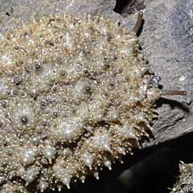
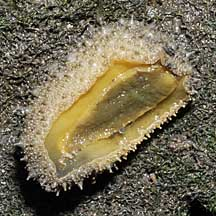
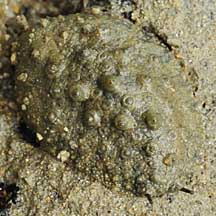
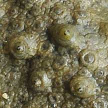
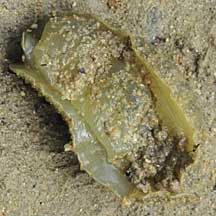

|
|
| sea slugs text index | photo index |
| Phylum Mollusca > Class Gastropoda > sea slugs > Family Onchidiidae |
| Ornate
onch slug awaiting identification* Family Onchidiidae updated Jun 2020 Where seen? This small oval slug with an ornate texture is sometimes seen in mangroves in the North. Features: 3-5cm. Body hard, oval, rounded. Skin with regular pattern of bumps with blunt spikes on them, resulting in a very ornate texture! Colour plain, beige or greyish. Eyes on long thin stalks. Underside and narrow foot are pale to lemon yellow. |
|
 Kranji Nature Trail, Jan 09 |
 Eyes on stalks. |
 Underside |
|
 Pulau Semakau, Feb 09 |
 |
 |
*Species are difficult to positively identify without close examination.
On this website, they are grouped by external features for convenience of display.
| Ornate onch slugs on Singapore shores |
On wildsingapore
flickr
|